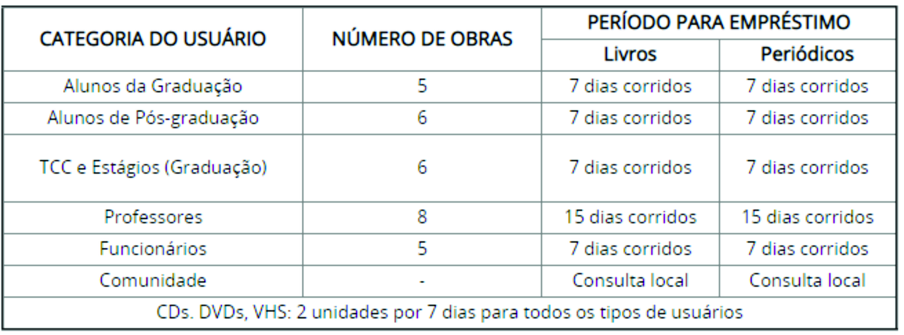

REGULAMENTO DA BIBLIOTECA
EMPRÉSTIMO
O usuário é responsável pelos cuidados e devolução dos exemplares emprestados em seu nome e código.
Os exemplares que forem devolvidos danificados rasurados ou com páginas arrancadas, deverão ser ressarcidos à Biblioteca e este usuário poderá ter seu código de acesso suspenso.
Em caso de extravio ou perda de material, o usuário deve comunicar o fato à Biblioteca e repor o mesmo material num período de 30 dias.
Em caso de atraso na devolução da obra, será cobrada multa de R$ 1,00 (um real) por volume e por dias corridos.
Para a retirada de material é obrigatória a apresentação da carteira de estudante da Faccat.

RENOVAÇÃO
O sistema da Biblioteca permitirá apenas duas renovações, ou seja, os alunos poderão estender - no máximo - em duas semanas a devolução dos livros. Esta nova política de funcionamento visa que todos os nossos usuários possam retirar os livros.
O empréstimo poderá ser renovado, desde que não haja pedido de reserva e o usuário não esteja em débito com a biblioteca.
A renovação do empréstimo deve ser feita pelo próprio usuário pela Internet ou nos computadores da Biblioteca.
As bibliotecas não se responsabilizam pelas renovações ocorridas durante as falhas no sistema, portanto as renovações são de inteira responsabilidade do usuário.
Em caso de falha de conexão, sistema não disponível ou outro problema, que não possibilite a utilização deste recurso, o usuário deverá comparecer à Biblioteca com o respectivo material e em tempo hábil para renovar o empréstimo.
Materiais em atraso NÃO serão renovados.
RESERVA
A reserva de material para empréstimo será realizada pelo próprio usuário através dos terminais de consulta da Biblioteca ou pela Internet, desde que:
• não esteja disponível na Biblioteca para empréstimo;
• não esteja emprestado ao solicitante;
• o usuário solicitante não esteja em débito com a Biblioteca.
Ao retornar do empréstimo, o material reservado ficará a disposição do usuário por 48 (quarenta e oito) horas e caso não seja retirado nesse prazo, passará ao usuário seguinte ou retornará à estante.
A reserva é nominal e obedecerá a ordem cronológica de pedidos.
O usuário é responsável pelo controle do prazo disponível de suas reservas.